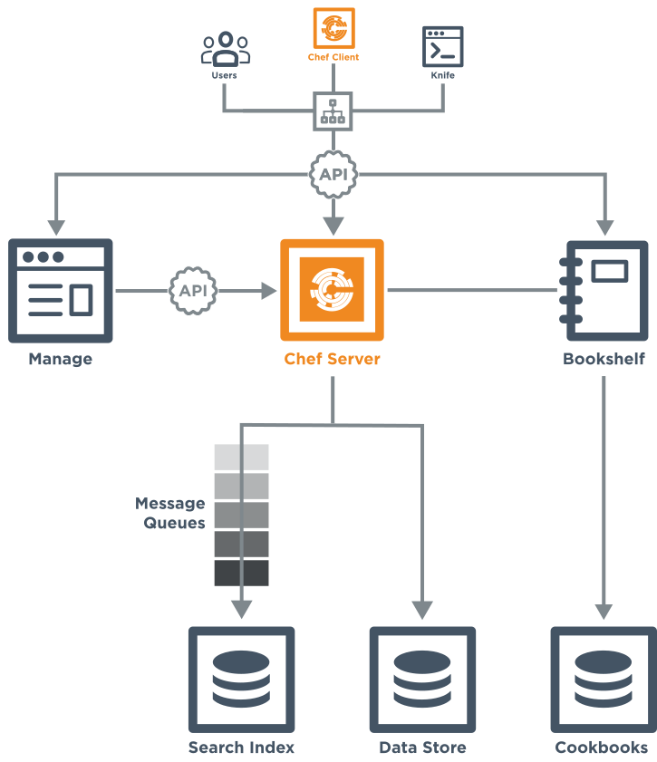

Runbook
The Chef server acts as a hub for configuration data. The Chef server stores cookbooks, the policies that are applied to nodes, and metadata that describes each registered node that is being managed by the chef-client. Nodes use the chef-client to ask the Chef server for configuration details, such as recipes, templates, and file distributions. The chef-client then does as much of the configuration work as possible on the nodes themselves (and not on the Chef server). This scalable approach distributes the configuration effort throughout the organization.
Starting with the release of Chef server 11, the front-end for the Chef server is written using Erlang, which is a programming language that first appeared in 1986, was open sourced in 1998, and is excellent with critical enterprise concerns like concurrency, fault-tolerance, and distributed environments. The Chef server can scale to the size of any enterprise and is sometimes referred to as Erchef.
The following diagram shows the various components that are part of a Chef server deployment and how they relate to one another.
{kind=link}
| Component | Description |
|---|---|
| Bookshelf | Bookshelf is used to store cookbook content—files, templates, and so on—that have been uploaded to the Chef server as part of a cookbook version. Cookbook content is stored by content checksum. If two different cookbooks or different versions of the same cookbook include the same file or template, Bookshelf will store that file only once. The cookbook content managed by Bookshelf is stored in flat files and is separated from the Chef server and search index repositories. All cookbooks are stored in a dedicated repository. |
| WebUI | chef-server-webui is a Ruby on Rails 3.0 application that hosts the web interface for the Chef server. |
| Erchef | Erchef is a complete rewrite of the core API for the Chef server, which allows it to be faster and more scalable than previous versions. The API itself is still compatible with the original Ruby-based Chef server, which means that cookbooks and recipes that were authored for the Ruby-based Chef server will continue to work on the Erlang-based Chef server. The chef-client is still written in Ruby. Note Even though the Chef server is authored in Erlang, writing code in Erlang is NOT a requirement for using Chef. |
| Message Queues | Messages are sent to the Search Index using the following components:
All messages are added to a dedicated search index repository. |
| Nginx | Nginx is an open-source HTTP and reverse proxy server that is used as the front-end load balancer for the Chef server. All requests to the Chef server API are routed through Nginx. |
| PostgreSQL | PostgreSQL is the data storage repository for the Chef server. |
The following sections detail how to monitor the server, manage log files, manage services, manage firewalls and ports, configure SSL, tune server configuration settings, and backup and restore data.
Monitor
Monitoring the Chef server involves two types of checks: application and system. In addition monitoring the HTTP requests that workstations and nodes are making to the Chef server and per-disk data storage volumes is recommended.
Monitoring Priorities
The following sections describe the priorities for monitoring of the Chef server. In particular, running out of disk space is the primary cause of failure.
Disks
Over time, and with enough data, disks will fill up or exceed the per-disk quotas that may have been set for them and they will not be able to write data. A disk that is not able to write data will not be able to support certain components of the Chef server, such as PostgreSQL, RabbitMQ, service log files, and deleted file handles. Monitoring disk usage is the best way to ensure that disks don’t fill up or exceed their quota.
Use the following commands to monitor global disk usage on a Chef server with a typical installation:
$ du -sh /var/opt/opscode
and:
$ du -sh /var/log/opscode
To keep the Chef server healthy, both /var/opt/opscode and /var/log/opscode should never exceed 80% use. In situations where disk space grows at a rapid pace, it may be preferable to shut down the Chef server and contact Chef support.
The following components should be monitored for signs that disks may be rapidly filling up:
- PostgreSQL PostgreSQL is the data store for the Chef server.
- RabbitMQ The RabbitMQ data folder can fill up if the opscode-expander service is not able to keep up with the data being moved into the search database by RabbitMQ. When the opscode-expander service falls behind, RabbitMQ will start storing the individual messages on-disk while it waits for the opscode-expander service to catch up. If the RabbitMQ disk fills up completely, RabbitMQ will need to be restarted to free up the disk space and any data that was stored on-disk will be lost.
- Log files If /var/log/opscode is taking up a lot of disk space, ensure that the Chef server log rotation cron job is running without errors. These errors can be found in /var/log/messages, /var/log/syslog and/or the root user’s local mail.
- Deleted file handles Running processes with file handles associated with one (or more) deleted files will prevent the disk space being used by the deleted files from being reclaimed. Use the sudo lsof | grep '(deleted)' command to find all deleted file handles.
High Availability
All components of computer systems fail, and ethernet networks, while being generally very robust, are no exception. A high availability configuration of the Chef server that uses DRBD depends on a functioning network to begin and maintain replication between the back end servers on which the Chef server is running.
To become aware of failure at the earliest opportunity, the /proc/drbd psuedo file should be monitored for signs that cluster replication has stopped or is falling behind:
$ cat /proc/drbd
A healthy connection state is similar to:
version: 8.4.0 (api:1/proto:86-100)
GIT-hash: 09b6d528b3b3de50462cd7831c0a3791abc665c3 build by linbit@buildsystem.linbit, 2011-10-12 09:07:35
0: cs:Connected ro:Secondary/Secondary ds:UpToDate/UpToDate C r-----
ns:0 nr:0 dw:0 dr:656 al:0 bm:0 lo:0 pe:0 ua:0 ap:0 ep:1 wo:b oos:0
An unhealthy connection state from the perspective of the initial primary machine is similar to:
version: 8.4.0 (api:1/proto:86-100)
GIT-hash: 09b6d528b3b3de50462cd7831c0a3791abc665c3 build by linbit@buildsystem.linbit, 2011-10-12 09:07:35
0: cs:WFConnection ro:Primary/Secondary ds:UpToDate/Unknown C r---
ns:0 nr:0 dw:0 dr:0 al:0 bm:0 lo:0 pe:0 ua:0 ap:0 ep:1 wo:b oos:54192
where this shows lost communication with the secondary machine and oos: at non-zero (and increasing). This connection state is not fatal, but does represent a degraded state for the cluster where the machines are no longer in sync and are building up a queue of unwritten writes on the originating side that must eventually be synchronized to the secondary machine after the network stabilizes.
Application Checks
Application-level checks should be done periodically to ensure that there is enough disk space, enough memory, and that the front-end and back-end services are communicating.
DRBD
Drbdadm is the management tool for DRBD. It can be used to obtain status information and to alter the state of the DRBD cluster. For more information about Drbdadm, see http://www.drbd.org/users-guide/re-drbdadm.html.
/proc/drbd is a virtual file that displays real-time status information about all currently-configured DRBD resources. Use the following command to view the contents of this virtual file:
$ cat /proc/drbd
Use chef-server-ctl ha-status along with /proc/drbd to help evaluate the current state of the cluster. Follow the split-brain recovery procedures for DRBD if the cluster becomes two unconnected pieces.
Erlang
Many components of the Chef server are written using Erlang and run on the BEAM virtual machine. One feature of Erlang and BEAM is the ability to interact with the running service using a command shell. For example:
$ cd /opt/opscode/embedded
export PATH=$PATH:/opt/opscode/bin:/opt/opscode/embedded/bin
bin/erl -setcookie service_name -name me@127.0.0.1 -remsh service_name@127.0.0.1
where service_name is bifrost or erchef. This command will then open a shell that is connected to the Erchef processes:
$ Erlang R15B02 (erts-5.9.2) [source] [64-bit] ...
Warning
Connecting to the Erlang processes should only be done when directed by Chef support services.
To connect to the oc_bifrost service, use the following command:
$ erl -setcookie oc_bifrost -name me@127.0.0.1 -remsh oc_bifrost@127.0.0.1
To connect to the opscode-erchef service, use the following command:
$ erl -setcookie erchef -name me@127.0.0.1 -remsh erchef@127.0.0.1
To disconnect from the shell, use the following key sequence CTRL-g, q, and then ENTER.
The output from the shell after the CTRL-g looks similar to:
(erchef@127.0.0.1)1>
User switch command
then enter q, and then hit ENTER to exit the shell.
Some commands should not be entered when interacting with a running service while using the command shell, including:
- q() kills the Erlang node
- init:stop()
- exit or exit() does nothing
eper tools
As root on the Chef server, point to the bundled eper package of debugging tools. Replace the 2nd and 5th path entries and the X.XX.X value in the following path with the items that occur on the system.
$ export ERL_LIB=:/opt/{chef-server,opscode}/embedded/service/{erchef,opscode-erchef}/lib/eper-X.XX.X/ebin/
Open an Erlang command shell to begin diagnosing service issues on the Chef server:
Eshell V5.10.4 (abort with ^G)
(erchef@127.0.0.1)1>
The dtop tool presents a view on the Erlang virtual machine that is similar to the linuxdagnostic command. The period at the end of the dtop command is required for the command to take effect.
(erchef@127.0.0.1)1> dtop:start().
To stop the dtop command, run:
(erchef@127.0.0.1)1> dtop:stop().
To disconnect from the shell, use the following key sequence CTRL-g, q, and then ENTER.
The output from the shell after the CTRL-g looks similar to:
(erchef@127.0.0.1)1>
User switch command
then enter q, and then hit ENTER to exit the shell.
Nginx
Use Nginx to monitor for services that may be returning 504 errors. Use the following command on a front-end machine:
$ grep 'HTTP/1.1" 504' /var/log/opscode/nginx/access.log
and then extract the URLs and sort them by uniq count:
$ grep 'HTTP/1.1" 504' nginx-access.log | cut -d' ' -f8 | sort | uniq -c | sort
In a large installation, restricting these results to a subset of results may be necessary:
$ tail -10000 nginx-access.log | grep 'HTTP/1.1" 504' | cut -d' ' -f8 | sort | uniq -c | sort
PostgreSQL
psql is the management tool for PostgreSQL. It can be used to obtain information about data stored in PostgreSQL. For more information about psql, see http://www.postgresql.org/docs/manuals/, and then the doc set appropriate for the version of PostgreSQL being used.
To connect to the PostgreSQL database, run the following command:
$ cd /opt/opscode/embedded/service/postgresql/
export PATH=$PATH:/opt/opscode/bin:/opt/opscode/embedded/bin
bin/psql -U opscode_chef
Warning
Connecting to the PostgreSQL database should only be done when directed by Chef support services.
RabbitMQ
rabbitmqctl is the management tool for RabbitMQ. It can be used to obtain status information and to ensure that message queuing is running properly. For more information about rabbitmqctl, see https://www.rabbitmq.com/man/rabbitmqctl.1.man.html.
To obtain status information for message queues, run the following command:
$ export PATH=$PATH:/opt/opscode/bin:/opt/opscode/embedded/bin
rabbitmqctl status
to return something similar to:
Status of node rabbit@localhost ...
[{pid,3044},
{running_applications, [{rabbit,"RabbitMQ","2.7.1"},
{mnesia,"MNESIA CXC 138 12","4.7.1},
{os_mon,"CPO CXC 138 46","2.2.10},
...
{kernel,"ERTS CXC 138 10","2.15.2"}]},
{os,{unix,linux}},
{erlang_version,"Erlang R15B02 (erts-5.9.2) [source] [64-bit] ..."},
{memory,[{total,96955896},
{processes,38634560},
...
{ets,5850336}]},
{vm_memory_high_watermark,0.39999999995176794},
{vm_memory_limit,1658647347}]
... done
Redis
The redis_lb service located on the back end machine handles requests that are made from the Nginx service that is located on all front end machines in a Chef server cluster.
In the event of a disk full condition for the Redis data store, the dump.rdb (the primary data store .rdb used by Redis) can become corrupt and saved as a zero byte file.
When this occurs, after the redis_lb service started, it’s logs will show a statement similar to the following:
2015-03-23_16:11:31.44256 [11529] 23 Mar 16:10:09.624 # Server started, Redis version 2.8.2
2015-03-23_16:11:31.44256 [11529] 23 Mar 16:10:09.624 # WARNING overcommit_memory is set to 0! Background save may fail under low memory condition. To fix this issue add 'vm.overcommit_memory = 1' to /etc/sysctl.conf and then reboot or run the command 'sysctl vm.overcommit_memory=1' for this to take effect.
2015-03-23_16:11:31.44257 [11529] 23 Mar 16:11:31.438 # Short read or OOM loading DB. Unrecoverable error, aborting now.
The dump.rdb file will be empty:
ls -al /var/opt/opscode/redis_lb/data/
total 20
drwxr-x--- 2 opscode opscode 4096 Mar 23 15:58 .
drwxr-x--- 4 opscode opscode 4096 Dec 22 18:59 ..
-rw-r--r-- 1 opscode opscode 0 Mar 23 15:58 dump.rdb
This situation is caused by a bug in Redis where saves are allowed to succeed even when the disk has been full for some time, and not just on edge cases where the disk becomes full as Redis is writing. To fix this issue, do the following:
Stop the redis_lb service:
chef-server-ctl stop redis_lb
Remove the corrupt files:
cd /var/opt/opscode/redis_lb/data rm -fr *rdbStart the redis_lb service:
chef-server-ctl start redis_lb less /var/log/opscode/redis_lb/current 2015-03-23_17:05:18.82516 [28676] 23 Mar 17:05:18.825 * The server is now ready to accept connections on port 16379
Reconfigure the Chef server to re-populate Redis:
chef-server-ctl reconfigure
Verify that Redis is re-populated, as indicated by the key dl_default:
/opt/opscode/embedded/bin/redis-cli -p 16379 keys \* 1) "dl_default"
Apache Solr
The opscode-solr4 service located on the primary back end machine handles requests that are made from the Erchef service that is located on all front end machines in a Chef server cluster.
Under normal circumstances, opscode-solr4 will need access to a total of 2x the space used for the index.
The thread at http://comments.gmane.org/gmane.comp.jakarta.lucene.solr.user/99149 explains more fully, including describing an extreme case where it’s possible that 3x the storage might be necessary. Chef server usage of Apache Solr via the opscode-solr4 service will generally only require the used storage for the index + 1x that amount of storage in free space.
For example, a 2GB search index will require about 2GB of free space available in the opscode-solr4 service’s storage area. The standard storage area for the opscode-solr4 service in a standalone topology Chef server install is /var/opt/opscode/opscode-solr4/data.
System Checks
System-level checks should be done for the following components: ports, services, and high availability status.
ha-status
The ha-status subcommand is used to check the status for services running in a high availability topology. This command will verify the following:
- The Keepalived daemon is enabled in the config
- The DRBD process is enabled in the config
- The underlying block device or logical volume for DRBD has been created and configured
- The DRBD device exists
- The current state of the server is master or backup; any migration processes have completed
- The failover virtual IP address is correctly attached to only the master node
- The DRBD state is correct based on the state of the server being master or backup
- The DRBD mount point is correctly mounted to only the master node
- The DRBD replication IP addresses are pingable
- The runit status of the services are correct (up or down) based on the master or backup state of the server
This subcommand has the following syntax:
$ private-chef-ctl ha-status
If this command runs successfully, it will return the following:
$ [OK] all checks passed.
Otherwise it will print out a list of errors, similar to the following:
...
[OK] nginx is running correctly, and I am master.
[ERROR] nrpe is not running.
[OK] opscode-account is running correctly, and I am master.
...
[ERROR] ERRORS WERE DETECTED.
For example:
[OK] keepalived HA services enabled
[OK] DRBD disk replication enabled
[OK] DRBD partition /dev/opscode/drbd found
[OK] DRBD device /dev/drbd0 found
[OK] cluster status = master
[OK] found VIP IP address and I am master
[OK] found VRRP communications interface eth1
[OK] my DRBD status is Connected/Primary/UpToDate and I am master
[OK] my DRBD partition is mounted and I am master
[OK] DRBD primary IP address pings
[OK] DRBD secondary IP address pings
...
[OK] all checks passed.
opscode-authz
The authz API provides a high-level view of the health of the opscode-authz service with a simple endpoint: _ping. This endpoint can be accessed using cURL and GNU Wget. For example:
$ curl http://localhost:9463/_ping
This command typically prints a lot of information. Use Python to use pretty-print output:
$ curl http://localhost:9463/_ping | python -mjson.tool
opscode-erchef
The status API provides a high-level view of the health of the system with a simple endpoint: _status. This endpoint can be accessed using cURL and GNU Wget. For example:
$ curl http://localhost:8000/_status
which will return something similar to:
{
"status":"pong",
"upstreams":{"upstream_service":"pong","upstream_service":"fail",...},
}
For each of the upstream services, pong or fail is returned. The possible upstream names are:
- chef_solr (for the opscode-solr4 service)
- chef_sql (for the postgresql service)
- oc_chef_authz (for the opscode-authz service)
If any of the status values return fail, this typically means the Chef server is unavailable for that service.
opscode-expander
As the queue depth increases it may take longer for updates posted to the Chef server by each chef-client to be added to the search indexes on the Chef server. The depth of this queue should be monitored using the following command:
$ cd /opt/opscode/embedded/service/opscode-expander/
export PATH=$PATH:/opt/opscode/bin:/opt/opscode/embedded/bin
Search Indexes
Search indexes allow queries to be made for any type of data that is indexed by the Chef server, including data bags (and data bag items), environments, nodes, and roles. A defined query syntax is used to support search patterns like exact, wildcard, range, and fuzzy. A search is a full-text query that can be done from several locations, including from within a recipe, by using the search subcommand in knife, the search method in the Recipe DSL, the search box in the Chef management console, and by using the /search or /search/INDEX endpoints in the Chef server API. The search engine is based on Apache Solr and is run from the Chef server.
If the search indexes are not being updated properly, first ensure that the opscode-expander service is running on the backend machine:
$ chef-server-ctl status opscode-expander
and then (if it is not running), start the service:
$ chef-server-ctl start opscode-expander
If the opscode-expander does not start correctly, then take a look at the /var/log/opscode/opscode-expander/current log file for error messages.
If the opscode-expander is running, check the queue length:
$ watch -n1 sudo -E bin/opscode-expanderctl queue-depth
If the number of total messages continues to increase, increase the number of workers available to the opscode-expander service.
opscode-expander-ctl
The opscode-expander-ctl executable can be used to generate status information for the opscode-expander service. The opscode-expander-ctl executable is run as a command-line tool from the master backend machine.
This tool has the following syntax:
opscode-expanderctl OPTION
This tool has the following options:
- log-level
- Use to show the log level for all nodes in the cluster.
- node-status
- Use to show the status for all nodes in the cluster.
- queue-depth
- Use to display the aggregate queue backlog.
- queue-status
- Use to show the backlog and consumer counts for each vnode queue.
For example, to view the aggregate queue backlog, enter the following:
$ cd /opt/opscode/embedded/service/opscode-expander/
export PATH=$PATH:/opt/opscode/bin:/opt/opscode/embedded/bin
bin/opscode-expanderctl queue-depth
to return something similar to:
total messages: 0
average queue depth: 0.0
max queue depth: 0
min queue depth: 0
Nodes, Workstations
If a client makes an HTTP request to the server that returns a non-specific error message, this is typically an issue with the opscode-chef or opscode-erchef services. View the full error message for these services in their respective log files. The error is most often a stacktrace from the application error. In some cases, the error message will clearly indicate a problem with another service, which can then be investigated further. For non-obvious errors, please contact Chef support services.
Log Files
All logs generated by the Chef server can be found in /var/log/opscode. Each service enabled on the system also has a sub-directory in which service-specific logs are located, typically found in /var/log/opscode/service_name.
View Log Files
The Chef server has built-in support for easily tailing the logs that are generated. To view all the logs being generated on the Chef server, enter the following command:
$ chef-server-ctl tail
To view logs for a specific service:
$ chef-server-ctl tail SERVICENAME
where SERVICENAME should be replaced with name of the service for which log files will be viewed.
Another way to view log files is to use the system utility tail:
$ tail -50f /var/log/chef-server/opscode-chef/current
tail Log Files
The tail subcommand is used to follow all of the Chef server logs for all services. This command can also be run for an individual service by specifying the name of the service in the command.
This subcommand has the following syntax:
$ chef-server-ctl tail SERVICE_NAME
where SERVICE_NAME represents the name of any service that is listed after running the service-list subcommand.
Another common approach to tailing the log files for a service is to use the system utility tail. For example:
$ tail -50f /var/log/opscode/opscode-chef/current
Supervisor
Supervisor logs are created and managed directly by the service supervisor, and are automatically rotated when a the current log file reaches 1,000,000 bytes. 10 log files are kept. The latest supervisor log is always located in /var/log/chef-server/service_name/current and rotated logs have a filename starting with @ followed by a precise tai64n timestamp based on when the file was rotated.
Supervisor logs are available for the following services:
- bifrost
- bookshelf
- nginx
- opscode-erchef
- opscode-expander
- opscode-expander-reindexer
- opscode-solr4
- postgresql
- rabbitmq
- redis
nginx, access
Nginx is an important entry point for data on the Chef server, which means that debugging efforts frequently start with analyzing the nginx service’s access.log file. This log contains every HTTP request made to the front-end machine and can be very useful when investigating request rates and usage patterns. The following is an example log entry:
175.185.9.6 - - [12/Jul/2013:15:56:54 +0000] "GET
/organizations/exampleorg/data/firewall/nova_api HTTP/1.1" 200
"0.850" 452 "-" "Chef Client/0.10.2 (ruby-1.8.7-p302; ohai-0.6.4;
x86_64-linux; +http://opscode.com)" "127.0.0.1:9460" "200"
"0.849" "0.10.2" "version=1.0" "some_node.example.com"
"2013-07-12T15:56:40Z" "2jmj7l5rSw0yVb/vlWAYkK/YBwk=" 985
where important fields in this log include:
- The HTTP status code (200)
- The IP address of the requesting client (175.185.9.6)
- The timestamp ([12/Jul/2013:15:56:54 +0000])
- The total request time ("0.850")
- The request method (GET)
- The request URL (/organizations/exampleorg/data/firewall/nova_api)
opscode-erchef, current
The opscode-erchef service’s current.log file contains a history of stack traces from major application crashes.
opscode-erchef, erchef
The opscode-erchef service’s erchef.log file contains a history of API requests that have been processed by Erchef. These logs can be rotated quickly, therefore it is generally best to sort them by date, and then find the most recently updated log file:
$ ls -lrt /var/log/opscode/opscode-erchef/erchef.log.*
The following is an example log entry:
2013-08-06T08:54:32Z erchef@127.0.0.1 INFO org_name=srwjedoqqoypgmvafmoi; req_id=g3IAA2QAEGVyY2hlZkAx
where important fields in this log include:
- The HTTP method (POST)
- The HTTP path (/organizations/srwjedoqqoypgmvafmoi/environments)
- The message ({created,<<"_default">>})
- The organization name (org_name=srwjedoqqoypgmvafmoi)
- The timestamp (2013-08-06T08:54:32Z)
- The name of the user and/or chef-client which made the request (pivotal)
In addition, the log file may contain additional entries that detail the amounts of time spent interacting with other services:
- rdbms_time (the time spent talking to the postgresql service)
- req_time (the request time)
- solr_time (the time spent talking to the opscode-solr service)
Application
Application logs are created by the services directly, and may require log rotation policies to be applied based on organizational goals and the platform(s) on which the services are running.
nginx
The nginx service creates both supervisor and administrator logs. The administrator logs contain both access and error logs for each virtual host utilized by the Chef server. Each of the following logs require external log rotation.
| Logs | Description |
|---|---|
| /var/log/opscode/nginx/access.log | The Web UI and API HTTP access logs. |
| /var/log/opscode/nginx/error.log | The Web UI and API HTTP error logs. |
| /var/log/opscode/nginx/internal-account.access.log | The opscode-account internal load-balancer access logs. |
| /var/log/opscode/nginx/internal-account.error.log | The opscode-account internal load-balancer error logs. |
| /var/log/opscode/nginx/internal-authz.access.log | The opscode-authz internal load-balancer access logs. |
| /var/log/opscode/nginx/internal-authz.error.log | The opscode-authz internal load-balancer error logs. |
| /var/log/opscode/nginx/internal-chef.access.log | The opscode-chef and opscode-erchef internal load-balancer access logs. |
| /var/log/opscode/nginx/internal-chef.error.log | The opscode-chef and opscode-erchef internal load-balancer error logs. |
| /var/log/opscode/nginx/nagios.access.log | The nagios access logs. |
| /var/log/opscode/nginx/nagios.error.log | The nagios error logs. |
| /var/log/opscode/nginx/rewrite-port-80.log | The rewrite logs for traffic that uses HTTP instead of HTTPS. |
To follow the logs for the service:
$ chef-server-ctl tail nginx
Read Log Files
The nginx access log format is as follows:
log_format opscode '$remote_addr - $remote_user [$time_local] '
'"$request" $status "$request_time" $body_bytes_sent '
'"$http_referrer" "$http_user_agent" "$upstream_addr" '
'"$upstream_status" "$upstream_response_time" "$http_x_chef_version" '
'"$http_x_ops_sign" "$http_x_ops_userid" "$http_x_ops_timestamp" '
'"$http_x_ops_content_hash" $request_length';
A sample log line:
192.168.4.1 - - [17/Feb/2012:16:02:42 -0800]
"GET /organizations/nginx/cookbooks HTTP/1.1" 200
"0.346" 12 "-"
"Chef Knife/0.10.4 (ruby-1.9.3-p0;
ohai-0.6.10;
x86_64-darwin11.2.0;
+http://opscode.com
)"
"127.0.0.1:9460" "200" "0.339" "0.10.4"
"version=1.0" "adam" "2012-02-18T00:02:42Z"
"2jmj7l5rSw0yVb/vlWAYkK/YBwk=" 871
Field descriptions:
| Field | Description |
|---|---|
| $remote_addr | The IP address of the client who made this request. |
| $remote_user | The HTTP basic auth user name of this request. |
| $time_local | The local time of the request. |
| $request | The HTTP request. |
| $status | The HTTP status code. |
| $request_time | The time it took to service the request. |
| $body_bytes_sent | The number of bytes in the HTTP response body. |
| $http_referrer | The HTTP referrer. |
| $http_user_agent | The user agent of the requesting client. |
| $upstream_addr | The upstream reverse proxy used to service this request. |
| $upstream_status | The upstream reverse proxy response status code. |
| $upstream_response_time | The upstream reverse proxy response time. |
| $http_x_chef_version | The version of Chef used to make this request. |
| $http_x_ops_sign | The version of the authentication protocol. |
| $http_x_ops_userid | The client name that was used to sign this request. |
| $http_x_ops_timestamp | The timestamp from when this request was signed. |
| $http_x_ops_content_hash | The hash of the contents of this request. |
| $request_length | The length of this request. |
Firewalls and Ports
All of the ports used by the Chef server are TCP ports. Refer to the operating system’s manual or site systems administrators for instructions on how to enable changes to ports, if necessary.
All services must be listening on the appropriate ports. Most monitoring systems provide a means of testing whether a given port is accepting connections and service-specific tools may also be available. In addition, the generic system tool Telnet can also be used to initiate the connection:
$ telnet HOST_NAME PORT
Note
An “external” port is external from the perspective of a workstation (such as knife), a machine (the chef-client), or any other user that accesses the Chef server via the Chef server API.
Standalone
The following sections describe the ports that are required by the Chef server in a standalone configuration:
A single loopback interface should be configured using the 127.0.0.1 address. This ensures that all of the services are available to the Chef server, in the event that the Chef server attempts to contact itself from within a front or back end machine. All ports should be accessible through the loopback interface of their respective hosts.
For a standalone installation, ensure that ports marked as external (marked as yes in the External column) are open and accessible via any firewalls that are in use:
| Port | Service Name, Description | External |
|---|---|---|
| 4321 | bookshelf The bookshelf service is an Amazon Simple Storage Service (S3)-compatible service that is used to store cookbooks, including all of the files—recipes, templates, and so on—that are associated with each cookbook. |
no |
| 80, 443, 9683 | nginx The nginx service is used to manage traffic to the Chef server, including virtual hosts for internal and external API request/response routing, external add-on request routing, and routing between front- and back-end components. Note Port 9683 is used to internally load balance the oc_bifrost service. |
yes |
| 9463 | oc_bifrost The oc_bifrost service ensures that every request to view or manage objects stored on the Chef server is authorized. |
|
| 9090 | oc-id The oc-id service enables OAuth 2.0 authentication to the Chef server by external applications, including Chef Supermarket and Chef Analytics. OAuth 2.0 uses token-based authentication, where external applications use tokens that are issued by the oc-id provider. No special credentials—webui_priv.pem or privileged keys—are stored on the external application. |
|
| 8000 | opscode-erchef The opscode-erchef service is an Erlang-based service that is used to handle Chef server API requests to the following areas within the Chef server:
|
|
| 8983 | opscode-solr4 The opscode-solr4 service is used to create the search indexes used for searching objects like nodes, data bags, and cookbooks. (This service ensures timely search results via the Chef server API; data that is used by the Chef platform is stored in PostgreSQL.) |
|
| 5432 | postgresql The postgresql service is used to store node, object, and user data. |
|
| 5672 | rabbitmq The rabbitmq service is used to provide the message queue that is used by the Chef server to get search data to Apache Solr so that it can be indexed for search. When Chef Analytics is confiugred, the rabbitmq service is also used to send data from the Chef server to the Chef Analytics server. |
|
| 16379 | redis_lb Key-value store used in conjunction with Nginx to route requests and populate request data used by the Chef server. |
High Availability
The following sections describe the ports that are required by the Chef server in a high availability configuration that is running DRBD and Keepalived to manage the active/passive backend servers:

A single loopback interface should be configured using the 127.0.0.1 address. This ensures that all of the services are available to the Chef server, in the event that the Chef server attempts to contact itself from within a front or back end machine. All ports should be accessible through the loopback interface of their respective hosts.
Front End
For front-end servers, ensure that ports marked as external (marked as yes in the External column) are open and accessible via any firewalls that are in use:
| Port | Service Name, Description | External |
|---|---|---|
| 80, 443, 9683 | nginx The nginx service is used to manage traffic to the Chef server, including virtual hosts for internal and external API request/response routing, external add-on request routing, and routing between front- and back-end components. Note Port 9683 is used to internally load balance the oc_bifrost service. |
yes |
| 9463 | oc_bifrost The oc_bifrost service ensures that every request to view or manage objects stored on the Chef server is authorized. |
|
| 9090 | oc-id The oc-id service enables OAuth 2.0 authentication to the Chef server by external applications, including Chef Supermarket and Chef Analytics. OAuth 2.0 uses token-based authentication, where external applications use tokens that are issued by the oc-id provider. No special credentials—webui_priv.pem or privileged keys—are stored on the external application. |
|
| 8000 | opscode-erchef The opscode-erchef service is an Erlang-based service that is used to handle Chef server API requests to the following areas within the Chef server:
|
Back End
For back-end servers, ensure that ports marked as external (marked as yes in the External column) are open and accessible via any firewalls that are in use:
| Port | Service Name, Description | External |
|---|---|---|
| 4321 | bookshelf The bookshelf service is an Amazon Simple Storage Service (S3)-compatible service that is used to store cookbooks, including all of the files—recipes, templates, and so on—that are associated with each cookbook. |
yes |
| 112 | keepalived The keepalived service manages the virtual IP address (VIP) between the backend machines in a high availability topology that uses DRBD. |
yes |
| 80, 443, 9683 | nginx The nginx service is used to manage traffic to the Chef server, including virtual hosts for internal and external API request/response routing, external add-on request routing, and routing between front- and back-end components. Note Port 9683 is used to internally load balance the oc_bifrost service. |
yes |
| 9683 | oc_bifrost The oc_bifrost service ensures that every request to view or manage objects stored on the Chef server is authorized. |
yes |
| 9090 | oc-id The oc-id service enables OAuth 2.0 authentication to the Chef server by external applications, including Chef Supermarket and Chef Analytics. OAuth 2.0 uses token-based authentication, where external applications use tokens that are issued by the oc-id provider. No special credentials—webui_priv.pem or privileged keys—are stored on the external application. |
yes |
| 8000 | opscode-erchef The opscode-erchef service is an Erlang-based service that is used to handle Chef server API requests to the following areas within the Chef server:
|
yes |
opscode-expander The opscode-expander service is used to process data (pulled from the rabbitmq service’s message queue) so that it can be properly indexed by the opscode-solr4 service. |
yes | |
| 8983 | opscode-solr4 The opscode-solr4 service is used to create the search indexes used for searching objects like nodes, data bags, and cookbooks. (This service ensures timely search results via the Chef server API; data that is used by the Chef platform is stored in PostgreSQL.) |
|
| 5432 | postgresql The postgresql service is used to store node, object, and user data. |
yes |
| 5672, 15672 | rabbitmq The rabbitmq service is used to provide the message queue that is used by the Chef server to get search data to Apache Solr so that it can be indexed for search. When Chef Analytics is confiugred, the rabbitmq service is also used to send data from the Chef server to the Chef Analytics server. |
yes |
| 16379 | redis_lb Key-value store used in conjunction with Nginx to route requests and populate request data used by the Chef server. |
yes |
| 7788-7799 | DRBD This port range must be open between all back end servers in a high availability configuration that uses DRBD. |
Tiered
The following sections describe the ports that are required by the Chef server in a tiered configuration:

A single loopback interface should be configured using the 127.0.0.1 address. This ensures that all of the services are available to the Chef server, in the event that the Chef server attempts to contact itself from within a front or back end machine. All ports should be accessible through the loopback interface of their respective hosts.
Front End
For front-end servers, ensure that ports marked as external (marked as yes in the External column) are open and accessible via any firewalls that are in use:
| Port | Service Name, Description | External |
|---|---|---|
| 80, 443, 9683 | nginx The nginx service is used to manage traffic to the Chef server, including virtual hosts for internal and external API request/response routing, external add-on request routing, and routing between front- and back-end components. Note Port 9683 is used to internally load balance the oc_bifrost service. |
yes |
| 9463 | oc_bifrost The oc_bifrost service ensures that every request to view or manage objects stored on the Chef server is authorized. |
|
| 9090 | oc-id The oc-id service enables OAuth 2.0 authentication to the Chef server by external applications, including Chef Supermarket and Chef Analytics. OAuth 2.0 uses token-based authentication, where external applications use tokens that are issued by the oc-id provider. No special credentials—webui_priv.pem or privileged keys—are stored on the external application. |
|
| 8000 | opscode-erchef The opscode-erchef service is an Erlang-based service that is used to handle Chef server API requests to the following areas within the Chef server:
|
Back End
For back-end servers in a tiered Chef server installation, ensure that ports marked as external (marked as yes in the External column) are open and accessible via any firewalls that are in use:
| Port | Service Name, Description | External |
|---|---|---|
| 80, 443, 9683 | nginx The nginx service is used to manage traffic to the Chef server, including virtual hosts for internal and external API request/response routing, external add-on request routing, and routing between front- and back-end components. Note Port 9683 is used to internally load balance the oc_bifrost service. |
yes |
| 9463 | oc_bifrost The oc_bifrost service ensures that every request to view or manage objects stored on the Chef server is authorized. |
|
| 8983 | opscode-solr4 The opscode-solr4 service is used to create the search indexes used for searching objects like nodes, data bags, and cookbooks. (This service ensures timely search results via the Chef server API; data that is used by the Chef platform is stored in PostgreSQL.) |
|
| 5432 | postgresql The postgresql service is used to store node, object, and user data. |
|
| 5672, 15672 | rabbitmq The rabbitmq service is used to provide the message queue that is used by the Chef server to get search data to Apache Solr so that it can be indexed for search. When Chef Analytics is confiugred, the rabbitmq service is also used to send data from the Chef server to the Chef Analytics server. |
|
| 16379 | redis_lb Key-value store used in conjunction with Nginx to route requests and populate request data used by the Chef server. |
|
| 4321 | bookshelf The bookshelf service is an Amazon Simple Storage Service (S3)-compatible service that is used to store cookbooks, including all of the files—recipes, templates, and so on—that are associated with each cookbook. |
|
| 8000 | opscode-erchef The opscode-erchef service is an Erlang-based service that is used to handle Chef server API requests to the following areas within the Chef server:
|
Chef Analytics
The following sections describe the ports that are required by Chef Analytics:
For communication between Chef Analytics and the Chef server, ensure that ports marked as external (yes) are open and accessible via any firewalls that are in use:
| Port | Service | External |
|---|---|---|
| 80 | nginx | yes |
| 443 | nginx | yes |
| 5672 | rabbitmq Note The RabbitMQ port on the Chef server must alow inbound traffic from Chef Analytics. |
no |
| 10011 | actions | no |
| 10012 | actions_messages | no |
| 10013 | notifier_config | no |
Chef Push Jobs
TCP protocol ports 10000 and 10002. TCP/10000 is the default heartbeat port. TCP/10002 is the command port. It may be configured in the Chef push jobs configuration file . This port allows Chef push jobs clients to communicate with the Chef push jobs server. In a configuration with both front and back ends, this port only needs to be open on the back end servers. The Chef push jobs server waits for connections from the Chef push jobs client, and never initiates a connection to a Chef push jobs client.
Services
The Chef server has a built in process supervisor, which ensures that all of the required services are in the appropriate state at any given time. The supervisor starts two processes per service.
Service Subcommands
This command has a built in process supervisor that ensures all of the required services are in the appropriate state at any given time. The supervisor starts two processes per service and provides the following subcommands for managing services: hup, int, kill, once, restart, service-list, start, status, stop, tail, and term.
hup
The hup subcommand is used to send a SIGHUP to all services. This command can also be run for an individual service by specifying the name of the service in the command.
This subcommand has the following syntax:
$ chef-server-ctl hup SERVICE_NAME
where SERVICE_NAME represents the name of any service that is listed after running the service-list subcommand.
int
The int subcommand is used to send a SIGINT to all services. This command can also be run for an individual service by specifying the name of the service in the command.
This subcommand has the following syntax:
$ chef-server-ctl int SERVICE_NAME
where SERVICE_NAME represents the name of any service that is listed after running the service-list subcommand.
kill
The kill subcommand is used to send a SIGKILL to all services. This command can also be run for an individual service by specifying the name of the service in the command.
This subcommand has the following syntax:
$ chef-server-ctl kill SERVICE_NAME
where SERVICE_NAME represents the name of any service that is listed after running the service-list subcommand.
once
The supervisor for the Chef server is configured to restart any service that fails, unless that service has been asked to change its state. The once subcommand is used to tell the supervisor to not attempt to restart any service that fails.
This command is useful when troubleshooting configuration errors that prevent a service from starting. Run the once subcommand followed by the status subcommand to look for services in a down state and/or to identify which services are in trouble. This command can also be run for an individual service by specifying the name of the service in the command.
This subcommand has the following syntax:
$ chef-server-ctl once SERVICE_NAME
where SERVICE_NAME represents the name of any service that is listed after running the service-list subcommand.
restart
The restart subcommand is used to restart all services enabled on the Chef server or to restart an individual service by specifying the name of that service in the command.
Warning
When running the Chef server in a high availability configuration, restarting all services may trigger failover.
This subcommand has the following syntax:
$ chef-server-ctl restart SERVICE_NAME
where SERVICE_NAME represents the name of any service that is listed after running the service-list subcommand. When a service is successfully restarted the output should be similar to:
$ ok: run: service_name: (pid 12345) 1s
service-list
The service-list subcommand is used to display a list of all available services. A service that is enabled is labeled with an asterisk (*).
This subcommand has the following syntax:
$ chef-server-ctl service-list
start
The start subcommand is used to start all services that are enabled in the Chef server. This command can also be run for an individual service by specifying the name of the service in the command.
This subcommand has the following syntax:
$ chef-server-ctl start SERVICE_NAME
where SERVICE_NAME represents the name of any service that is listed after running the service-list subcommand. When a service is successfully started the output should be similar to:
$ ok: run: service_name: (pid 12345) 1s
The supervisor for the Chef server is configured to wait seven seconds for a service to respond to a command from the supervisor. If you see output that references a timeout, it means that a signal has been sent to the process, but that the process has yet to actually comply. In general, processes that have timed out are not a big concern, unless they are failing to respond to the signals at all. If a process is not responding, use a command like the kill subcommand to stop the process, investigate the cause (if required), and then use the start subcommand to re-enable it.
status
The status subcommand is used to show the status of all services available to the Chef server. The results will vary based on the configuration of a given server. This subcommand has the following syntax:
$ chef-server-ctl status
and will return the status for all services. Status can be returned for individual services by specifying the name of the service as part of the command:
$ chef-server-ctl status SERVICE_NAME
where SERVICE_NAME represents the name of any service that is listed after running the service-list subcommand.
When service status is requested, the output should be similar to:
$ run: service_name: (pid 12345) 12345s; run: log: (pid 1234) 67890s
where
- run: is the state of the service (run: or down:)
- service_name: is the name of the service for which status is returned
- (pid 12345) is the process identifier
- 12345s is the uptime of the service, in seconds
For example:
$ down: opscode-erchef: (pid 35546) 10s
By default, runit will restart services automatically when the services fail. Therefore, runit may report the status of a service as run: even when there is an issue with that service. When investigating why a particular service is not running as it should be, look for the services with the shortest uptimes. For example, the list below indicates that the opscode-erchef should be investigated further:
run: oc-id
run: opscode-chef: (pid 4327) 13671s; run: log: (pid 4326) 13671s
run: opscode-erchef: (pid 5383) 5s; run: log: (pid 4382) 13669s
run: opscode-expander: (pid 4078) 13694s; run: log: (pid 4077) 13694s
run: opscode-expander-reindexer: (pid 4130) 13692s; run: log: (pid 4114) 13692s
High Availability
On back-end servers in a high availability topology, Keepalived is used by the clustering service to determine whether a service should be running. If the status subcommand is run against any of these nodes, a few things change:
- On the back-end node that is currently the backup server, it is normal to see only one running process: Keepalived
- On the back-end node that is currently the master server, it is normal to see all services running. It is also normal to see some services in a down state if the server, on reboot, did not attempt to start the services because Keepalived determines which services are restarted based on the state of the cluster
A sample status line for a service that is running on the master server in a high availability topology:
run: opscode-solr4: (pid 25341) 239s, normally down; run: log: (pid 5700) 145308s
Log Files
A typical status line for a service that is running any of the Chef server front-end services is similar to the following:
run: name_of_service: (pid 1486) 7819s; run: log: (pid 1485) 7819s
where:
- run describes the state in which the supervisor attempts to keep processes. This state is either run or down. If a service is in a down state, it should be stopped
- name_of_service is the service name, for example: opscode-solr4
- (pid 1486) 7819s; is the process identifier followed by the amount of time (in seconds) the service has been running
- run: log: (pid 1485) 7819s is the log process. It is typical for a log process to have a longer run time than a service; this is because the supervisor does not need to restart the log process in order to connect the supervised process
If the service is down, the status line will appear similar to the following:
down: opscode-solr4: 3s, normally up; run: log: (pid 1485) 8526s
where
- down indicates that the service is in a down state
- 3s, normally up; indicates that the service is normally in a run state and that the supervisor would attempt to restart this service after a reboot
stop
The stop subcommand is used to stop all services enabled on the Chef server. This command can also be run for an individual service by specifying the name of the service in the command.
This subcommand has the following syntax:
$ chef-server-ctl stop SERVICE_NAME
where SERVICE_NAME represents the name of any service that is listed after running the service-list subcommand. When a service is successfully stopped the output should be similar to:
$ ok: diwb: service_name: 0s, normally up
For example:
$ chef-server-ctl stop
will return something similar to:
ok: down: nginx: 393s, normally up
ok: down: opscode-chef: 391s, normally up
ok: down: opscode-erchef: 391s, normally up
ok: down: opscode-expander: 390s, normally up
ok: down: opscode-expander-reindexer: 389s, normally up
ok: down: opscode-solr4: 389s, normally up
ok: down: postgresql: 388s, normally up
ok: down: rabbitmq: 388s, normally up
ok: down: redis_lb: 387s, normally up
tail
The tail subcommand is used to follow all of the Chef server logs for all services. This command can also be run for an individual service by specifying the name of the service in the command.
This subcommand has the following syntax:
$ chef-server-ctl tail SERVICE_NAME
where SERVICE_NAME represents the name of any service that is listed after running the service-list subcommand.
term
The term subcommand is used to send a SIGTERM to all services. This command can also be run for an individual service by specifying the name of the service in the command.
This subcommand has the following syntax:
$ chef-server-ctl term SERVICE_NAME
where SERVICE_NAME represents the name of any service that is listed after running the service-list subcommand.
List of Services
The following services are part of the Chef server:
- bifrost
- bookshelf
- keepalived
- nginx
- opscode-erchef
- opscode-expander
- opscode-solr4
- postgresql
- rabbitmq
- redis-lb
bifrost
The oc_bifrost service ensures that every request to view or manage objects stored on the Chef server is authorized.
status
To view the status for the service:
$ chef-server-ctl status bifrost
to return something like:
$ run: bifrost: (pid 1234) 123456s; run: log: (pid 5678) 789012s
restart
To restart the service:
$ chef-server-ctl restart bifrost
to return something like:
$ ok: run: bifrost: (pid 1234) 1234s
bookshelf
The bookshelf service is an Amazon Simple Storage Service (S3)-compatible service that is used to store cookbooks, including all of the files—recipes, templates, and so on—that are associated with each cookbook.
status
To view the status for the service:
$ chef-server-ctl status bookshelf
to return something like:
$ run: bookshelf: (pid 1234) 123456s; run: log: (pid 5678) 789012s
restart
To restart the service:
$ chef-server-ctl restart bookshelf
to return something like:
$ ok: run: bookshelf: (pid 1234) 1234s
keepalived
The keepalived service manages the virtual IP address (VIP) between the backend machines in a high availability topology that uses DRBD.
status
To view the status for the service:
$ chef-server-ctl status keepalived
to return something like:
$ run: keepalived: (pid 1234) 123456s; run: log: (pid 5678) 789012s
restart
To restart the service:
$ chef-server-ctl restart keepalived
to return something like:
$ ok: run: keepalived: (pid 1234) 1234s
nginx
The nginx service is used to manage traffic to the Chef server, including virtual hosts for internal and external API request/response routing, external add-on request routing, and routing between front- and back-end components.
status
To view the status for the service:
$ chef-server-ctl status nginx
to return something like:
$ run: nginx: (pid 1234) 123456s; run: log: (pid 5678) 789012s
restart
To restart the service:
$ chef-server-ctl restart nginx
to return something like:
$ ok: run: nginx: (pid 1234) 1234s
opscode-erchef
The opscode-erchef service is an Erlang-based service that is used to handle Chef server API requests to the following areas within the Chef server:
- Cookbooks
- Data bags
- Environments
- Nodes
- Roles
- Sandboxes
- Search
status
To view the status for the service:
$ chef-server-ctl status opscode-erchef
to return something like:
$ run: opscode-erchefs: (pid 1234) 123456s; run: log: (pid 5678) 789012s
restart
To restart the service:
$ chef-server-ctl restart opscode-erchef
to return something like:
$ ok: run: opscode-erchef: (pid 1234) 1234s
opscode-expander
The opscode-expander service is used to process data (pulled from the rabbitmq service’s message queue) so that it can be properly indexed by the opscode-solr4 service.
status
To view the status for the service:
$ chef-server-ctl status opscode-expander
to return something like:
$ run: opscode-expander: (pid 1234) 123456s; run: log: (pid 5678) 789012s
restart
To restart the service:
$ chef-server-ctl restart opscode-expander
to return something like:
$ ok: run: opscode-expander: (pid 1234) 1234s
opscode-solr4
The opscode-solr4 service is used to create the search indexes used for searching objects like nodes, data bags, and cookbooks. (This service ensures timely search results via the Chef server API; data that is used by the Chef platform is stored in PostgreSQL.)
status
To view the status for the service:
$ chef-server-ctl status opscode-solr
to return something like:
$ run: opscode-solr: (pid 1234) 123456s; run: log: (pid 5678) 789012s
restart
To restart the service:
$ chef-server-ctl restart opscode-solr
to return something like:
$ ok: run: opscode-solr: (pid 1234) 1234s
postgresql
The postgresql service is used to store node, object, and user data.
status
To view the status for the service:
$ chef-server-ctl status postgresql
to return something like:
$ run: postgresql: (pid 1234) 123456s; run: log: (pid 5678) 789012s
restart
To restart the service:
$ chef-server-ctl restart postgresql
to return something like:
$ ok: run: postgresql: (pid 1234) 1234s
rabbitmq
The rabbitmq service is used to provide the message queue that is used by the Chef server to get search data to Apache Solr so that it can be indexed for search. When Chef Analytics is confiugred, the rabbitmq service is also used to send data from the Chef server to the Chef Analytics server.
status
To view the status for the service:
$ chef-server-ctl status rabbitmq
to return something like:
$ run: rabbitmq: (pid 1234) 123456s; run: log: (pid 5678) 789012s
restart
To restart the service:
$ chef-server-ctl restart rabbitmq
to return something like:
$ ok: run: rabbitmq: (pid 1234) 1234s
redis
Key-value store used in conjunction with Nginx to route requests and populate request data used by the Chef server.
status
To view the status for the service:
$ chef-server-ctl status redis
to return something like:
$ run: redis: (pid 1234) 123456s; run: log: (pid 5678) 789012s
restart
To restart the service:
$ chef-server-ctl restart redis
to return something like:
$ ok: run: redis: (pid 1234) 1234s
Security
Configuration of SSL for the Chef server using certificate authority-verified certificates is done by placing the certificate and private key file obtained from the certifying authority in the correct files after the initial configuration of Chef server.
Initial configuration of the Chef server is done automatically using a self-signed certificate to create the certificate and private key files for Nginx.
The locations of the certificate and private key files are
- /var/opt/opscode/nginx/ca/FQDN.crt
- /var/opt/opscode/nginx/ca/FQDN.key
Because the FQDN has already been configured, do the following:
Replace the contents of /var/opt/opscode/nginx/ca/FQDN.crt and /var/opt/opscode/nginx/ca/FQDN.key with the certifying authority’s files.
Reconfigure the Chef server:
$ chef-server-ctl reconfigure
Restart the Nginx service to load the new key and certificate:
$ chef-server-ctl restart nginx
Warning
The FQDN for the Chef server should not exceed 64 characters when using OpenSSL. OpenSSL requires the CN in a certificate to be no longer than 64 characters.
Warning
By default, the Chef server uses the FQDN to determine the common name (CN). If the FQDN of the Chef server is longer than 64 characters, the reconfigure command will not fail, but an empty certificate file will be created. Nginx will not start if a certificate file is empty.
SSL Certificates
The Chef server can be configured to use SSL certificates by adding the following settings to the server configuration file:
| Setting | Description |
|---|---|
| nginx['ssl_certificate'] | The SSL certificate used to verify communication over HTTPS. |
| nginx['ssl_certificate_key'] | The certificate key used for SSL communication. |
and then setting their values to define the paths to the certificate and key.
For example:
nginx['ssl_certificate'] = "/etc/pki/tls/certs/your-host.crt"
nginx['ssl_certificate_key'] = "/etc/pki/tls/private/your-host.key"
Save the file, and then run the following command:
$ sudo chef-server-ctl reconfigure
For more information about the server configuration file, see chef-server.rb.
SSL Protocols
The following settings are often modified from the default as part of the tuning effort for the nginx service and to configure the Chef server to use SSL certificates:
- nginx['ssl_certificate']
- The SSL certificate used to verify communication over HTTPS. Default value: nil.
- nginx['ssl_certificate_key']
- The certificate key used for SSL communication. Default value: nil.
- nginx['ssl_ciphers']
The list of supported cipher suites that are used to establish a secure connection. To favor AES256 with ECDHE forward security, drop the RC4-SHA:RC4-MD5:RC4:RSA prefix. For example:
nginx['ssl_ciphers'] = "HIGH:MEDIUM:!LOW:!kEDH: \ !aNULL:!ADH:!eNULL:!EXP: \ !SSLv2:!SEED:!CAMELLIA: \ !PSK"
- nginx['ssl_protocols']
The SSL protocol versions that are enabled. SSL 3.0 is supported by the Chef server; however, SSL 3.0 is an obsolete and insecure protocol. Transport Layer Security (TLS)—TLS 1.0, TLS 1.1, and TLS 1.2—has effectively replaced SSL 3.0, which provides for authenticated version negotiation between the chef-client and Chef server, which ensures the latest version of the TLS protocol is used. For the highest possible security, it is recommended to disable SSL 3.0 and allow all versions of the TLS protocol. For example:
nginx['ssl_protocols'] = "TLSv1 TLSv1.1 TLSv1.2"
Note
See https://wiki.mozilla.org/Security/Server_Side_TLS for more information about the values used with the nginx['ssl_ciphers'] and nginx['ssl_protocols'] settings.
For example, after copying the SSL certificate files to the Chef server, update the nginx['ssl_certificate'] and nginx['ssl_certificate_key'] settings to specify the paths to those files, and then (optionally) update the nginx['ssl_ciphers'] and nginx['ssl_protocols'] settings to reflect the desired level of hardness for the Chef server:
nginx['ssl_certificate'] = "/etc/pki/tls/private/name.of.pem"
nginx['ssl_certificate_key'] = "/etc/pki/tls/private/name.of.key"
nginx['ssl_ciphers'] = "HIGH:MEDIUM:!LOW:!kEDH:!aNULL:!ADH:!eNULL:!EXP:!SSLv2:!SEED:!CAMELLIA:!PSK"
nginx['ssl_protocols'] = "TLSv1 TLSv1.1 TLSv1.2"
Example: Configure SSL Keys for Nginx
The following example shows how the Chef server sets up and configures SSL certificates for Nginx. The cipher suite used by Nginx is configurable using the ssl_protocols and ssl_ciphers settings.
ssl_keyfile = File.join(nginx_ca_dir, "#{node['private_chef']['nginx']['server_name']}.key")
ssl_crtfile = File.join(nginx_ca_dir, "#{node['private_chef']['nginx']['server_name']}.crt")
ssl_signing_conf = File.join(nginx_ca_dir, "#{node['private_chef']['nginx']['server_name']}-ssl.conf")
unless File.exist?(ssl_keyfile) && File.exist?(ssl_crtfile) && File.exist?(ssl_signing_conf)
file ssl_keyfile do
owner 'root'
group 'root'
mode '0755'
content '/opt/opscode/embedded/bin/openssl genrsa 2048'
not_if { File.exist?(ssl_keyfile) }
end
file ssl_signing_conf do
owner 'root'
group 'root'
mode '0755'
not_if { File.exist?(ssl_signing_conf) }
content <<-EOH
[ req ]
distinguished_name = req_distinguished_name
prompt = no
[ req_distinguished_name ]
C = #{node['private_chef']['nginx']['ssl_country_name']}
ST = #{node['private_chef']['nginx']['ssl_state_name']}
L = #{node['private_chef']['nginx']['ssl_locality_name']}
O = #{node['private_chef']['nginx']['ssl_company_name']}
OU = #{node['private_chef']['nginx']['ssl_organizational_unit_name']}
CN = #{node['private_chef']['nginx']['server_name']}
emailAddress = #{node['private_chef']['nginx']['ssl_email_address']}
EOH
end
ruby_block 'create crtfile' do
block do
r = Chef::Resource::File.new(ssl_crtfile, run_context)
r.owner 'root'
r.group 'root'
r.mode '0755'
r.content "/opt/opscode/embedded/bin/openssl req -config '#{ssl_signing_conf}' -new -x509 -nodes -sha1 -days 3650 -key '#{ssl_keyfile}'"
r.not_if { File.exist?(ssl_crtfile) }
r.run_action(:create)
end
end
end
Chef Analytics
The Chef Analytics server can be configured to use SSL certificates by adding the following settings in the server configuration file:
| Setting | Description |
|---|---|
| ssl['certificate'] | The SSL certificate used to verify communication over HTTPS. |
| ssl['certificate_key'] | The certificate key used for SSL communication. |
and then setting their values to define the paths to the certificate and key.
For example:
ssl['certificate'] = "/etc/pki/tls/certs/your-host.crt"
ssl['certificate_key'] = "/etc/pki/tls/private/your-host.key"
Save the file, and then run the following command:
$ sudo opscode-analytics-ctl reconfigure
Knife, chef-client
Chef server 12 enables SSL verification by default for all requests made to the server, such as those made by knife and the chef-client. The certificate that is generated during the installation of the Chef server is self-signed, which means the certificate is not signed by a trusted certificate authority (CA) that ships with the chef-client. The certificate generated by the Chef server must be downloaded to any machine from which knife and/or the chef-client will make requests to the Chef server.
For example, without downloading the SSL certificate, the following knife command:
$ knife client list
responds with an error similar to:
ERROR: SSL Validation failure connecting to host: chef-server.example.com ...
ERROR: OpenSSL::SSL::SSLError: SSL_connect returned=1 errno=0 state=SSLv3 ...
This is by design and will occur until a verifiable certificate is added to the machine from which the request is sent.
See SSL Certificates for more information about how knife and the chef-client use SSL certificates generated by the Chef server.
Private Certificate Authority
If an organization is using an internal certificate authority, then the root certificate will not appear in any cacerts.pem file that ships by default with operating systems and web browsers. Because of this, no currently deployed system will be able to verify certificates that are issued in this manner. To allow other systems to trust certificates from an internal certificate authority, this root certificate will need to be configured so that other systems can follow the chain of authority back to the root certificate. (An intermediate certificate is not enough becuase the root certificate is not already globally known.)
To use an internal certificate authority, append both the server and root certificates into a single .crt file. For example:
$ cat server.crt root.crt >> /var/opt/opscode/nginx/ca/FQDN.crt
Intermediate Certificates
To use an intermediate certificate, append both the server and intermediate certificates into a single .crt file. For example:
$ cat server.crt intermediate.crt >> /var/opt/opscode/nginx/ca/FQDN.crt
Regenerate Certificates
SSL certificates should be regenerated periodically. This is an important part of protecting the Chef server from vulnerabilities and helps to prevent the information stored on the Chef server from being compromised.
To regenerate SSL certificates:
Run the following command:
$ chef-server-ctl stop
The Chef server can regenerate them. These certificates will be located in /var/opt/opscode/nginx/ca/ and will be named after the FQDN for the Chef server. To determine the FQDN for the server, run the following command:
$ hostname -f
Please delete the files found in the ca directory with names like this $FQDN.crt and $FQDN.key.
If your organization has provided custom SSL certificates to the Chef server, the locations of that custom certificate and private key are defined in /etc/opscode/chef-server.rb as values for the nginx['ssl_certificate'] and nginx['ssl_certificate_key'] settings. Delete the files referenced in those two settings and regenerate new keys using the same authority.
Run the following command, Chef server-generated SSL certificates will automatically be created if necessary:
$ chef-server-ctl reconfigure
Run the following command:
$ chef-server-ctl start
Key Rotation
Use the following commands to manage public and private key rotation for users and clients.
add-client-key
Use the add-client-key subcommand to add a client key.
Syntax
This subcommand has the following syntax:
$ chef-server-ctl add-client-key ORG_NAME CLIENT_NAME [--public-key-path PATH] [--expiration-date DATE] [--key-name NAME]
Warning
All options for this subcommand must follow all arguments.
Options
This subcommand has the following options:
- CLIENT_NAME
- The name of the client that you wish to add a key for.
- -e DATE --expiration-date DATE
- An ISO 8601 formatted string: YYYY-MM-DDTHH:MM:SSZ. For example: 2013-12-24T21:00:00Z. If not passed, expiration will default to infinity.
- -k NAME --key-name NAME
- String defining the name of your new key for this client. If not passed, it will default to the fingerprint of the public key.
- ORG_NAME
- The short name for the organization to which the client belongs.
- -p PATH --public-key-path PATH
- The location to a file containing valid PKCS#1 public key to be added. If not passed, then the server will generate a new one for you and return the private key to STDOUT.
add-user-key
Use the add-user-key subcommand to add a user key.
Syntax
This subcommand has the following syntax:
$ chef-server-ctl add-user-key USER_NAME [--public-key-path PATH] [--expiration-date DATE] [--key-name NAME]
Warning
All options for this subcommand must follow all arguments.
Options
This subcommand has the following options:
- -e DATE --expiration-date DATE
- An ISO 8601 formatted string: YYYY-MM-DDTHH:MM:SSZ. For example: 2013-12-24T21:00:00Z. If not passed, expiration will default to infinity.
- -k NAME --key-name NAME
- String defining the name of your new key for this user. If not passed, it will default to the fingerprint of the public key.
- -p PATH --public-key-path PATH
- The location to a file containing valid PKCS#1 public key to be added. If not passed, then the server will generate a new one for you and return the private key to STDOUT.
- USER_NAME
- The user name for the user for which a key is added.
delete-client-key
Use the delete-client-key subcommand to delete a client key.
Syntax
This subcommand has the following syntax:
$ chef-server-ctl delete-client-key ORG_NAME CLIENT_NAME KEY_NAME
Options
This subcommand has the following arguments:
- ORG_NAME
- The short name for the organization to which the client belongs.
- CLIENT_NAME
- The name of the client.
- KEY_NAME
- The unique name to be assigned to the key you wish to delete.
delete-user-key
Use the delete-user-key subcommand to delete a user key.
Syntax
This subcommand has the following syntax:
$ chef-server-ctl delete-user-key USER_NAME KEY_NAME
Warning
The parameters for this subcommand must be in the order specified above.
Options
This subcommand has the following arguments:
- USER_NAME
- The user name.
- KEY_NAME
- The unique name to be assigned to the key you wish to delete.
list-client-key
Use the list-client-keys subcommand to list client keys.
Syntax
This subcommand has the following syntax:
$ chef-server-ctl list-client-keys ORG_NAME CLIENT_NAME [--verbose]
Warning
All options for this subcommand must follow all arguments.
Options
This subcommand has the following options:
- CLIENT_NAME
- The name of the client.
- ORG_NAME
- The short name for the organization to which the client belongs.
- --verbose
- Use to show the full public key strings in command output.
list-user-key
Use the list-user-keys subcommand to list client keys.
Syntax
This subcommand has the following syntax:
$ chef-server-ctl list-user-keys USER_NAME [--verbose]
Warning
All options for this subcommand must follow all arguments.
Options
This subcommand has the following options:
- USER_NAME
- The user name you wish to list keys for.
- --verbose
- Use to show the full public key strings in command output.
Example
To view a list of user keys (including public key output):
$ chef-server-ctl list-user-keys applejack --verbose
Returns:
2 total key(s) found for user applejack
key_name: test-key
expires_at: Infinity
public_key:
-----BEGIN PUBLIC KEY-----
MIIBIjANBgkqhkiG9w0BAQEFAAOCAQ8AMIIBCgKCAQEA4q9Dh+bwJSjhU/VI4Y8s
9WsbIPfpmBpoZoZVPL7V6JDfIaPUkdcSdZpynhRLhQwv9ScTFh65JwxC7wNhVspB
4bKZeW6vugNGwCyBIemMfxMlpKZQDOc5dnBiRMMOgXSIimeiFtL+NmMXnGBBHDaE
b+XXI8oCZRx5MTnzEs90mkaCRSIUlWxOUFzZvnv4jBrhWsd/yBM/h7YmVfmwVAjL
VST0QG4MnbCjNtbzToMj55NAGwSdKHCzvvpWYkd62ZOquY9f2UZKxYCX0bFPNVQM
EvBQGdNG39XYSEeF4LneYQKPHEZDdqe7TZdVE8ooU/syxlZgADtvkqEoc4zp1Im3
2wIDAQAB
-----END PUBLIC KEY-----
key_name: default
expires_at: Infinity
public_key:
-----BEGIN PUBLIC KEY-----
MIIBIjANBgkqhkiG9w0BAQEFAAOCAQ8AMIIBCgKCAQEA4q9Dh+bwJSjhU/VI4Y8s
9WsbIPfpmBpoZoZVPL7V6JDfIaPUkdcSdZpynhRLhQwv9ScTFh65JwxC7wNhVspB
4bKZeW6vugNGwCyBIemMfxMlpKZQDOc5dnBiRMMOgXSIimeiFtL+NmMXnGBBHDaE
b+XXI8oCZRx5MTnzEs90mkaCRSIUlWxOUFzZvnv4jBrhWsd/yBM/h7YmVfmwVAjL
VST0QG4MnbCjNtbzToMj55NAGwSdKHCzvvpWYkd62ZOquY9f2UZKxYCX0bFPNVQM
EvBQGdNG39XYSEeF4LneYQKPHEZDdqe7TZdVE8ooU/syxlZgADtvkqEoc4zp1Im3
2wIDAQAB
-----END PUBLIC KEY-----
chef-client Settings
Use following client.rb settings to manage SSL certificate preferences:
| Setting | Description |
|---|---|
| local_key_generation | Whether the Chef server or chef-client generates the private/public key pair. When true, the chef-client generates the key pair, and then sends the public key to the Chef server. Default value: true. |
| ssl_ca_file | The file in which the OpenSSL key is saved. This setting is generated automatically by the chef-client and most users do not need to modify it. |
| ssl_ca_path | The path to where the OpenSSL key is located. This setting is generated automatically by the chef-client and most users do not need to modify it. |
| ssl_client_cert | The OpenSSL X.509 certificate used for mutual certificate validation. This setting is only necessary when mutual certificate validation is configured on the Chef server. Default value: nil. |
| ssl_client_key | The OpenSSL X.509 key used for mutual certificate validation. This setting is only necessary when mutual certificate validation is configured on the Chef server. Default value: nil. |
| ssl_verify_mode | Set the verify mode for HTTPS requests.
Depending on how OpenSSL is configured, the ssl_ca_path may need to be specified. Default value: :verify_peer. |
| verify_api_cert | Verify the SSL certificate on the Chef server. When true, the chef-client always verifies the SSL certificate. When false, the chef-client uses the value of ssl_verify_mode to determine if the SSL certificate requires verification. Default value: false. |
Server Tuning
The server configuration file contains a list of all configuration options that are available for the Chef server. Some of these values should be modified for large-scale installations.
Note
This topic contains general information about how settings can be tuned. In many cases, this topic suggests specific values to be used for tuning. That said, every organization and configuration is different, so please don’t hesitate to contact Chef support to discuss your tuning effort so as to help ensure the right value is identified for any particular setting.
Customize the Config File
The chef-server.rb file contains all of the non-default configuration settings used by the Chef server. (The default settings are built-in to the Chef server configuration and should only be added to the chef-server.rb file to apply non-default values.) These configuration settings are processed when the chef-server-ctl reconfigure command is run, such as immediately after setting up the Chef server or after making a change to the underlying configuration settings after the server has been deployed. The chef-server.rb file is a Ruby file, which means that conditional statements can be used in the configuration file.
Use Conditions
Use a case statement to apply different values based on whether the setting exists on the front-end or back-end servers. Add code to the server configuration file similar to the following:
role_name = ChefServer["servers"][node['fqdn']]["role"]
case role_name
when "backend"
# backend-specific configuration here
when "frontend"
# frontend-specific configuration here
end
Recommended Settings
The following settings are typically added to the server configuration file (no equal sign is necessary to set the value):
- api_fqdn
- The FQDN for the Chef server. This setting is not in the server configuration file by default. When added, its value should be equal to the FQDN for the service URI used by the Chef server. For example: api_fqdn "chef.example.com".
- bootstrap
- Default value: true.
- ip_version
- Use to set the IP version: "ipv4" or "ipv6". When set to "ipv6", the API listens on IPv6 and front end and back end services communicate via IPv6 when a high availability configuration is used. When configuring for IPv6 in a high availability configuration, be sure to set the netmask on the IPv6 backend_vip attribute. Default value: "ipv4".
- notification_email
- Default value: info@example.com.
SSL Protocols
The following settings are often modified from the default as part of the tuning effort for the nginx service and to configure the Chef server to use SSL certificates:
- nginx['ssl_certificate']
- The SSL certificate used to verify communication over HTTPS. Default value: nil.
- nginx['ssl_certificate_key']
- The certificate key used for SSL communication. Default value: nil.
- nginx['ssl_ciphers']
The list of supported cipher suites that are used to establish a secure connection. To favor AES256 with ECDHE forward security, drop the RC4-SHA:RC4-MD5:RC4:RSA prefix. For example:
nginx['ssl_ciphers'] = "HIGH:MEDIUM:!LOW:!kEDH: \ !aNULL:!ADH:!eNULL:!EXP: \ !SSLv2:!SEED:!CAMELLIA: \ !PSK"
- nginx['ssl_protocols']
The SSL protocol versions that are enabled. SSL 3.0 is supported by the Chef server; however, SSL 3.0 is an obsolete and insecure protocol. Transport Layer Security (TLS)—TLS 1.0, TLS 1.1, and TLS 1.2—has effectively replaced SSL 3.0, which provides for authenticated version negotiation between the chef-client and Chef server, which ensures the latest version of the TLS protocol is used. For the highest possible security, it is recommended to disable SSL 3.0 and allow all versions of the TLS protocol. For example:
nginx['ssl_protocols'] = "TLSv1 TLSv1.1 TLSv1.2"
Note
See https://wiki.mozilla.org/Security/Server_Side_TLS for more information about the values used with the nginx['ssl_ciphers'] and nginx['ssl_protocols'] settings.
For example, after copying the SSL certificate files to the Chef server, update the nginx['ssl_certificate'] and nginx['ssl_certificate_key'] settings to specify the paths to those files, and then (optionally) update the nginx['ssl_ciphers'] and nginx['ssl_protocols'] settings to reflect the desired level of hardness for the Chef server:
nginx['ssl_certificate'] = "/etc/pki/tls/private/name.of.pem"
nginx['ssl_certificate_key'] = "/etc/pki/tls/private/name.of.key"
nginx['ssl_ciphers'] = "HIGH:MEDIUM:!LOW:!kEDH:!aNULL:!ADH:!eNULL:!EXP:!SSLv2:!SEED:!CAMELLIA:!PSK"
nginx['ssl_protocols'] = "TLSv1 TLSv1.1 TLSv1.2"
Optional Services Tuning
The following settings are often used to for performance tuning of the Chef server in larger installations.
Note
When changes are made to the chef-server.rb file the Chef server must be reconfigured by running the following command:
$ chef-server-ctl reconfigure
bookshelf
The following setting is often modified from the default as part of the tuning effort for the bookshelf service:
- bookshelf['vip']
- The virtual IP address. Default value: node['fqdn'].
opscode-erchef
The following settings are often modified from the default as part of the tuning effort for the opscode-erchef service:
- opscode_erchef['db_pool_size']
- The number of open connections to PostgreSQL that are maintained by the service. If failures indicate that the opscode-erchef service ran out of connections, try increasing the postgresql['max_connections'] setting. If failures persist, then increase this value (in small increments) and also increase the value for postgresql['max_connections']. Default value: 20.
- opscode_erchef['s3_url_ttl']
- The amount of time (in seconds) before connections to the server expire. If chef-client runs are timing out, increase this setting to 3600, and then adjust again if necessary. Default value: 900.
- opscode_erchef['strict_search_result_acls']
Use to specify that search results only return objects to which an actor (user, client, etc.) has read access, as determined by ACL settings. This affects all searches. When true, the performance of the Chef management console may increase because it enables the Chef management console to skip redundant ACL checks. To ensure the Chef management console is configured properly, after this setting has been applied with a chef-server-ctl reconfigure run chef-manage-ctl reconfigure to ensure the Chef management console also picks up the setting. Default value: false.
Warning
When true, opscode_erchef['strict_search_result_acls'] affects all search results and any actor (user, client, etc.) that does not have read access to a search result will not be able to view it. For example, this could affect search results returned during chef-client runs if a chef-client does not have permission to read the information.
opscode-expander
The following setting is often modified from the default as part of the tuning effort for the opscode-expander service:
- opscode_expander['nodes']
- The number of allowed worker processes. The opscode-expander service runs on the back-end and feeds data to the opscode-solr service, which creates and maintains search data used by the Chef server. Additional memory may be required by these worker processes depending on the frequency and volume of chef-client runs across the organization, but only if the back-end machines have available CPU and RAM. Default value: 2.
opscode-solr4
The following sections describe ways of tuning the opscode-solr4 service to improve performance around large node sizes, available memory, and update frequencies.
Available Memory
Use the following configuration setting to help ensure that Apache Solr does not run out of memory:
- opscode_solr4['heap_size']
- The amount of memory (in MBs) available to Apache Solr. If there is not enough memory available, search queries made by nodes to Apache Solr may fail. The amount of memory that must be available also depends on the number of nodes in the organization, the frequency of search queries, and other characteristics that are unique to each organization. In general, as the number of nodes increases, so does the amount of memory.
If Apache Solr is running out of memory, the /var/log/opscode/opscode-solr4/current log file will contain a message similar to:
SEVERE: java.lang.OutOfMemoryError: Java heap space
The default value for opscode_solr4['heap_size'] should work for many organizations, especially those with fewer than 25 nodes. For organizations with more than 25 nodes, set this value to 25% of system memory or 1024, whichever is smaller. For very large configurations, increase this value to 25% of system memory or 4096, whichever is smaller. This value should not exceed 8192.
Large Node Sizes
The maximum field length setting for Apache Solr should be greater than any expected node object file sizes in order for them to be successfully added to the search index. If a node object file is greater than the maximum field length, the node object will be indexed up to the maximum, but the part of the file past that limit will not be indexed. If this occurs, it will seem as if nodes disappear from the search index. To ensure that large node file sizes are indexed properly, verify the following configuration settings:
- nginx['client_max_body_size']
- The maximum accepted body size for a client request, as indicated by the Content-Length request header. When the maximum accepted body size is greater than this value, a 413 Request Entity Too Large error is returned. Default value: 250m.
and
- opscode-erchef']['max_request_size']
- Default value: 1000000.
to ensure that those settings are not part of the reasons for incomplete indexing, and then update the following setting so that its value is greater than the expected node file sizes:
- opscode_solr4['max_field_length']
- The maximum field length (in number of tokens/terms). If a field length exceeds this value, Apache Solr may not be able to complete building the index. Default value: 100000 (increased from the Apache Solr default value of 10000).
Use the wc command to get the character count of a large node object file. For example:
$ wc -w NODE_NAME.json
and then ensure there is a buffer beyond that value. For example, verify the size of the largest node object file:
$ wc -w nodebsp2016.json
which returns 154516. Update the opscode_solr4['max_field_length'] setting to have a value greater than the returned value. For example: 180000.
Update Frequency
At the end of every chef-client run, the node object is saved to the Chef server. From the Chef server, each node object is then added to the SOLR search index. This process is asynchronous. By default, node objects are committed to the search index every 60 seconds or per 1000 node objects, whichever occurs first.
When data is committed to the Apache Solr index, all incoming updates are blocked. If the duration between updates is too short, it is possible for the rate at which updates are asked to occur to be faster than the rate at which objects can be actually committed.
Use the following configuration setting to improve the indexing performance of node objects:
- opscode_solr4['commit_interval']
- The frequency (in seconds) at which node objects are added to the Apache Solr search index. Default value: 60000 (every 60 seconds).
- opscode_solr4['max_commit_docs']
- The frequency (in documents) at which node objects are added to the Apache Solr search index. Default value: 1000 (every 1000 documents).
postgresql
The following setting is often modified from the default as part of the tuning effort for the postgresql service:
- postgresql['max_connections']
The maximum number of allowed concurrent connections. This value should only be tuned when the opscode_erchef['db_pool_size'] value used by the opscode-erchef service is modified. Default value: 350.
If there are more than two front end machines in a cluster, the postgresql['max_connections'] setting should be increased. The increased value depends on the number of machines in the front end, but also the number of services that are running on each of these machines.
- Each front end machine always runs the oc_bifrost and opscode-erchef services.
- The Reporting add-on adds the reporting service.
- The Chef push jobs service adds the push_jobs service.
Each of these services requires 25 connections, above the default value.
Use the following formula to help determine what the increased value should be:
new_value = current_value + [ (# of front end machines - 2) * (25 * # of services) ]
For example, if the current value is 350, there are four front end machines, and all add-ons are installed, then the formula looks like:
550 = 350 + [(4 - 2) * (25 * 4)]
rabbitmq
Note
Chef Analytics has been replaced by Chef Automate.
Note
Chef Analytics has been replaced by Chef Automate.
The following settings must be modified when the Chef Analytics server is configured as a standalone server:
- rabbitmq['node_ip_address']
The bind IP address for RabbitMQ. Default value: "127.0.0.1".
Chef Analytics uses the same RabbitMQ service that is configured on the Chef server. When the Chef Analytics server is configured as a standalone server, the default settings for rabbitmq['node_ip_address'] and rabbitmq['vip'] must be updated. When the Chef Analytics server is configured as a standalone server, change this value to 0.0.0.0.
- rabbitmq['vip']
The virtual IP address. Default value: "127.0.0.1".
Chef Analytics uses the same RabbitMQ service that is configured on the Chef server. When the Chef Analytics server is configured as a standalone server, the default settings for rabbitmq['node_ip_address'] and rabbitmq['vip'] must be updated. When the Chef Analytics server is configured as a standalone server, change this value to the backend VIP address for the Chef server.
Analytics Queues
If the RabbitMQ queue that is used by Chef Analytics stops consuming messages, the Chef server data partition will fill up and may affect the overall performance of the Chef server application itself. The settings for the RabbitMQ queue are tunable, including for queue length monitoring, queue capacity, maximum number of messages that can be in the queue before messages are dropped, the point at which messages are dropped, for settings used by the rabbitmq-management plugin, and so on.
The following settings may be used for tuning RabbitMQ queues used by Chef Analytics and the Chef server:
- rabbitmq['analytics_max_length']
- The maximum number of messages that can be queued before RabbitMQ automatically drops messages from the front of the queue to make room for new messages. Default value: 10000.
- rabbitmq['drop_on_full_capacity']
- Specify if messages will stop being sent to the RabbitMQ queue when it is at capacity. Default value: true.
- rabbitmq['management_enabled']
- Specify if the rabbitmq-management plugin is enabled. Default value: true.
- rabbitmq['management_password']
- The rabbitmq-management plugin password. Default value: 'chefrocks'.
- rabbitmq['management_port']
- The rabbitmq-management plugin port. Default value: 15672.
- rabbitmq['management_user']
- The rabbitmq-management plugin user. Default value: 'rabbitmgmt'.
- rabbitmq['prevent_erchef_startup_on_full_capacity']
- Specify if the Chef server will start when the monitored RabbitMQ queue is full. Default value: false.
- rabbitmq['queue_at_capacity_affects_overall_status']
- Specify if the _status endpoint in the Chef server API will fail if the monitored queue is at capacity. Default value: false.
- rabbitmq['queue_length_monitor_enabled']
- Specify if the queue length monitor is enabled. Default value: true.
- rabbitmq['queue_length_monitor_millis']
- The frequency (in milliseconds) at which the length of the RabbitMQ queue is checked. Default value: 30000.
- rabbitmq['queue_length_monitor_timeout_millis']
- The timeout (in milliseconds) at which calls to the queue length monitor will stop if the Chef server is overloaded. Default value: 5000.
- rabbitmq['queue_length_monitor_queue']
- The RabbitMQ queue that is observed by queue length monitor. Default value: 'alaska'.
- rabbitmq['queue_length_monitor_vhost']
- The virtual host for the RabbitMQ queue that is observed by queue length monitor. Default value: '/analytics'.
- rabbitmq['rabbit_mgmt_http_cull_interval']
- The maximum cull interval (in seconds) for the HTTP connection pool that is used by the rabbitmq-management plugin. Default value: 60.
- rabbitmq['rabbit_mgmt_http_init_count']
- The initial worker count for the HTTP connection pool that is used by the rabbitmq-management plugin. Default value: 25.
- rabbitmq['rabbit_mgmt_http_max_age']
- The maximum connection worker age (in seconds) for the HTTP connection pool that is used by the rabbitmq-management plugin. Default value: 70.
- rabbitmq['rabbit_mgmt_http_max_connection_duration']
- The maximum connection duration (in seconds) for the HTTP connection pool that is used by the rabbitmq-management plugin. Default value: 70.
- rabbitmq['rabbit_mgmt_http_max_count']
- The maximum worker count for the HTTP connection pool that is used by the rabbitmq-management plugin. Default value: 100.
- rabbitmq['rabbit_mgmt_ibrowse_options']
- An array of comma-separated key-value pairs of ibrowse options for the HTTP connection pool that is used by the rabbitmq-management plugin. Default value: '{connect_timeout, 10000}'.
- rabbitmq['rabbit_mgmt_timeout']
- The timeout for the HTTP connection pool that is used by the rabbitmq-management plugin. Default value: 30000.
- rabbitmq['ssl_versions']
- The SSL versions used by the rabbitmq-management plugin. (See also https://www.rabbitmq.com/ssl.html.) Default value: ['tlsv1.2', 'tlsv1.1'].
Backup and Restore
Periodic backups of Chef server data are an essential part of managing and maintaining a healthy configuration and to help ensure that important data can be restored, if required.
High Availability
Note
This section only applies to the Enterprise Chef server, version 11.x.
To configure backups on the backend servers in a high availability configuration, set a cron job in /etc/cron.d/opc_snapshot similar to the following:
# Add to /etc/cron.d/opc_snapshot, and then remove comment below MAILTO to activate the cron job
SHELL=/bin/bash
HOME=/opt/opscode/bin
PATH=/usr/bin:/usr/sbin:/bin:/opt/opscode/embedded/bin:/opt/opscode/bin
MAILTO=SOMEONE@payingattention
#17 23 * * * root drbd-backups -g opscode -l drbd > /dev/null 2>&1
A cron job similar to the previous example will mount a new snapshot logical volume named:
/dev/opscode/backup-{+%Y-%m-%d-%H-%M-%S}
where {+%Y-%m-%d-%H-%M-%S} is a format string for year, month, day, so on.
After the cron job has run successfully, the mount command will show the new logical volume mounted on the /var/opt/opscode/drbd-backups mount point. The backup script will create a snapshot logical volume in unused space in the /opscode volume group. After the snapshot is created, the backup script will attempt to mount the snapshot logical volume, after which the snapshot will stay mounted for 24 hours. Upon the next cron job run, the backup script will attempt to unmount, destroy the snapshot, and then repeat the sequence.
Note
The drbd-backups script with default settings requires at least 40 GB free space in the /opscode volume group on the backend servers.
Required Directories
Data stored in the following directories should be backed up periodically:
- /etc/opscode
- /var/opt/opscode
This data is also essential when any type of backup and restore operation is done for the Chef server.
Backup
When backing up Chef server data, be sure that the system is shut down (or otherwise quiet) at the time of the backup. Perform all activities as root unless otherwise directed.
Make a postgres export using the following commands:
export THEDATE=`date '+%Y-%m-%d-%H-%M-%S'` sudo -E -u opscode-pgsql bash /opt/opscode/embedded/bin/pg_dumpall -c | gzip --fast > /tmp/postgresql-dump-$THEDATE.gz Ctrl-d
Synchronize to make sure that all of the data is present on-disk:
sync
Backup the /etc/opscode and /var/opt/opscode directories and include the postgres export file as root
tar cvfzp var-opt-opscode-$THEDATE.tar.gz /etc/opscode /var/opt/opscode /tmp/postgresql-dump-$THEDATE.gz
Restore
When restoring Chef server data, the previously backed-up files will be required, along with the Chef server running only the postgresql service. Perform all activities as root unless otherwise directed.
Stop the Chef server:
$ chef-server-ctl stop
Restore the previously backed-up files to the following locations:
- /etc/opscode
- /var/opt/opscode
by using the following command, which will exclude PostgreSQL files:
tar xvfzp var-opt-opscode-$THEDATE.tar.gz --exclude='var/opt/opscode/drbd/data/postgresql_9.2' -C /
Start the postgresql service:
$ chef-server-ctl start postgresql
Restore the PostgreSQL database:
su - opscode-pgsql gunzip -c postgresql-dump-$THEDATE.gz | /opt/opscode/embedded/bin/psql -U "opscode-pgsql" -d postgres
Ignore the following error messages:
- ERROR: current user cannot be dropped
- ERROR: role "opscode-pgsql" already exists
Reconfigure the Chef server:
$ chef-server-ctl reconfigure
Start the Chef server:
$ chef-server-ctl start
Reconfigure the Chef management console:
$ opscode-manage-ctl reconfigure
chef-server-ctl
Use the following commands to manage backups of Chef server data, and then to restore those backups.
backup
The backup subcommand is used to back up all Chef server data. This subcommand:
- Requires rsync to be installed on the Chef server prior to running the command
- Requires a chef-server-ctl reconfigure prior to running the command
- Should not be run in a Chef server configuration with an external PostgreSQL database; use knife ec backup instead
- Puts the initial backup in the /var/opt/chef-backup directory as a tar.gz file; move this backup to a new location for safe keeping
Options
This subcommand has the following options:
- -y, --yes
- Use to specify if the Chef server can go offline during tar.gz-based backups.
Syntax
This subcommand has the following syntax:
$ chef-server-ctl backup
restore
The restore subcommand is used to restore Chef server data from a backup that was created by the backup subcommand. This subcommand may also be used to add Chef server data to a newly-installed server. This subcommand:
- Requires rsync to be installed on the Chef server prior to running the command
- Requires a chef-server-ctl reconfigure prior to running the command
- Should not be run in a Chef server configuration with an external PostgreSQL database; use knife ec backup instead
- May restore backed up data to any version of the Chef server that supports this command, starting with Chef server 12.2 (which is the first version of the Chef server in which the chef-server-ctl restore command is available)
Options
This subcommand has the following options:
- -c, --cleanse
- Use to remove all existing data on the Chef server; it will be replaced by the data in the backup archive.
- -d DIRECTORY, --staging-dir DIRECTORY
- Use to specify that the path to an empty directory to be used during the restore process. This directory must have enough disk space to expand all data in the backup archive.
Syntax
This subcommand has the following syntax:
$ chef-server-ctl restore PATH_TO_BACKUP (options)
Examples
$ chef-server-ctl restore /path/to/tar/archive.tar.gz